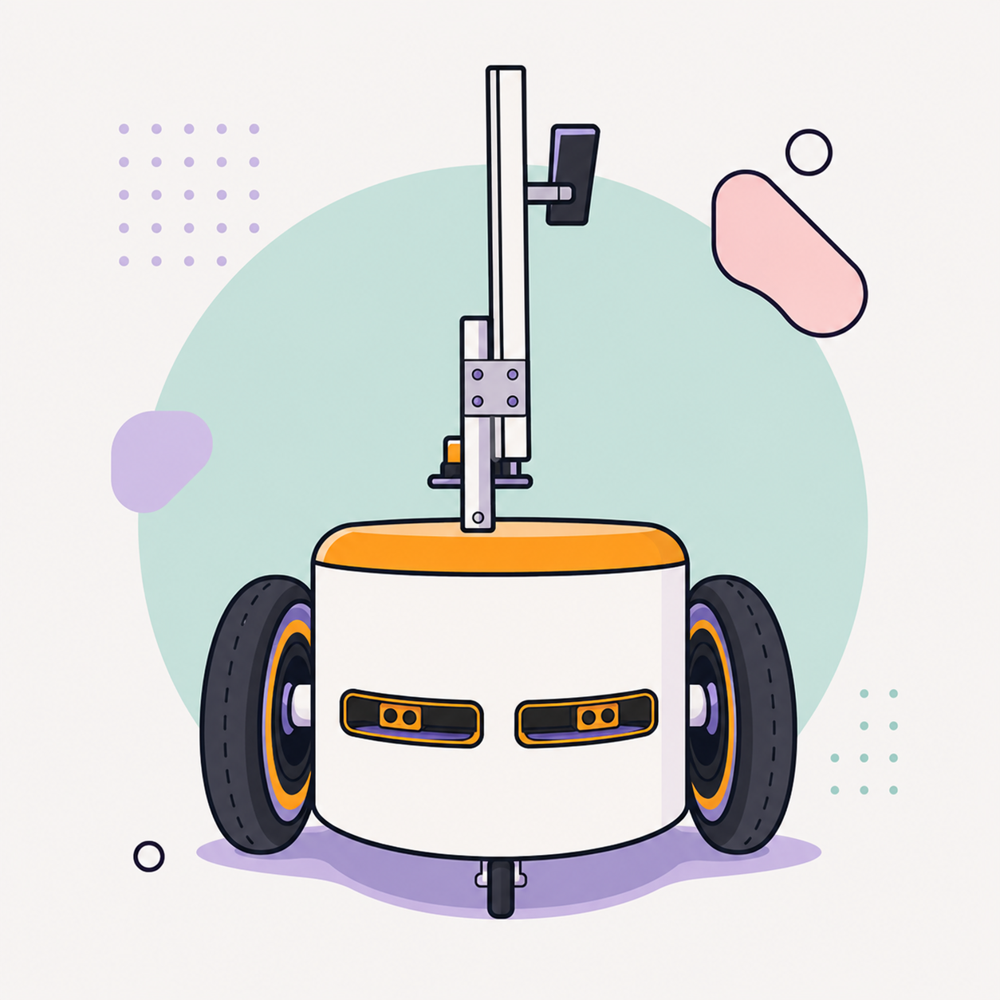
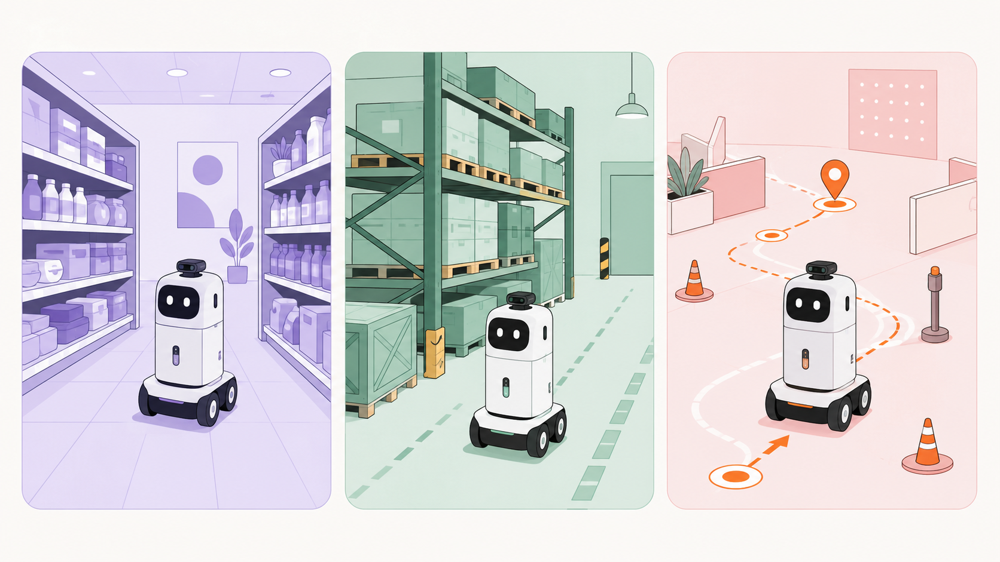
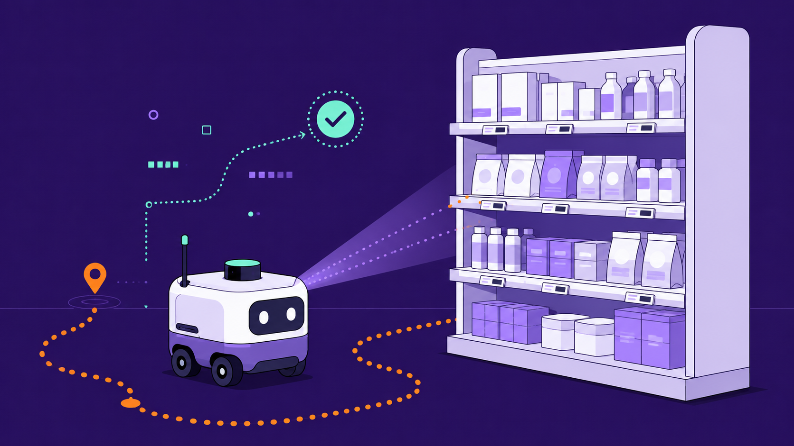
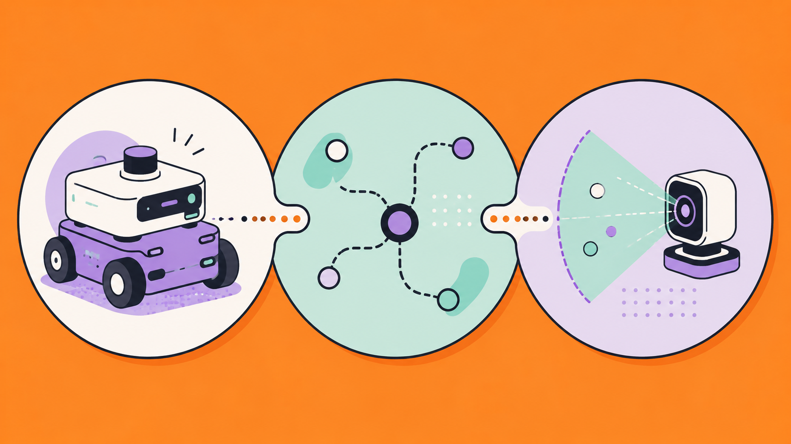

Labour-intensive rounds
Manual shelf checks take staff time and require a repeatable control procedure.
Autonomous shelf monitoring
We are developing a mobile robotic platform for checking price labels, barcodes, QR codes, and related visual product information in retail and warehouse environments.
View the product
Challenge
Product information in retail and warehouse environments changes continuously. The project focuses on automating recurring control rounds and preparing data for further review.
Manual shelf checks take staff time and require a repeatable control procedure.
Price labels and product indicators need timely comparison with the actual shelf condition.
Retail and warehouse environments need clear routes, data rules, and regular control.
Use cases
The platform is designed for repeatable routes and controlled capture of visual information.

Checking price labels, barcodes, QR codes, and related shelf-level product indicators.
Route-based checks of labelling and visual information in storage and picking areas.
Reviewing how the mobile platform, navigation software, and visual module work together in operating conditions.
Product
Moving along a defined route
Collecting visual shelf information
Preparing data for discrepancy analysis
Functions and configuration are refined during development and pilot validation. Only verified materials are published on this website.

System
The solution evolves as pilot scenarios are reviewed.

A wheeled base and modules intended for movement in retail and warehouse environments.
A software layer for route control and the sequence of operations in a work environment.
Tools for collecting and preparing visual information about labels and related product indicators.
Development
Results, protocols, and test materials will be added after internal review and publication readiness checks.

Defining the platform, modules, and design documentation.
Developing route control and preparation of control data.
Reviewing movement and applied scenarios during the pilot, with findings recorded in test protocols.
A public product description and approved project materials added as they become ready.
Project materials
This area will contain approved development descriptions, photos and videos, test materials, and pilot updates. Each publication is checked for accuracy and restricted information before release.
Diagrams, module descriptions, and documentation excerpts safe for publication.
Approved demonstrations, version descriptions, and operating scenarios.
Protocols, photos, videos, and conclusions after review of source materials.
Team
Names and personal contact details are published only with approval.
Platform design and integration
Navigation and control software
Pilot validation and material preparation
News
The website now contains a basic product description, pilot status, and development tracks.
Contacts
Contact details for Industrial Robotics and Technologies LLC will be added after channel ownership and inquiry-handling procedures are confirmed.